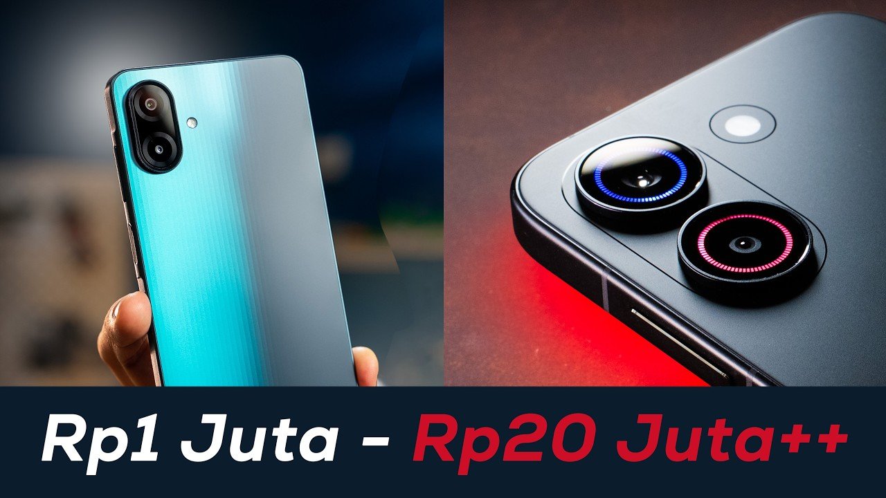

Rekomendasi HP di Tengah Krisis Memori (Pertengahan 2026)

Kembali ke Halaman 2
Setelah melihat betapa parahnya lonjakan harga RAM dan memori di halaman sebelumnya, mungkin kamu jadi ragu: "Terus, kalau harus beli HP sekarang, mending beli apa?"
Merangkum dari ulasan channel YouTube GadgetIn, kita harus benar-benar menyesuaikan ekspektasi. Spesifikasi HP yang bisa kita dapatkan di harga tertentu pada pertengahan 2026 ini sudah jauh berbeda dengan tahun-tahun sebelumnya. Jangan berharap dapat RAM atau Storage besar dengan harga murah lagi.
Realita Pasar HP Saat Ini
- Selamat Tinggal HP di Bawah 1,5 Juta: Saat ini, hampir mustahil mencari HP resmi yang layak pakai di bawah Rp 1,5 juta. Biaya untuk cip RAM dan storage saja sudah memakan modal besar, sehingga HP di kelas ini nyaris punah atau isinya hanya merk tidak jelas (KW).
- RAM 4GB Kembali Jadi Standar Murah: Untuk HP kelas Rp 1,5 - 2 jutaan, standar yang diberikan mentok di RAM 4GB. Jika ingin lebih, harganya pasti melonjak tajam.
Rekomendasi HP Terbaik (GadgetIn Edition)
Berikut adalah beberapa HP yang masih dianggap "Worth It" dan patut dibeli di tengah situasi harga saat ini, dibagi berdasarkan kelas harganya:
- Kelas Rp 1,5 - 2 Juta: Samsung A07
- Satu-satunya HP di bawah 2 juta yang berani memakai prosesor MediaTek Helio G99 (yang lain biasanya UniSOC atau seri bawah). Meski RAM hanya 4GB/64GB, HP ini punya baterai 5000 mAh, kamera 50MP, tahan hujan (IP54), dan jaminan update software hingga 6 tahun. Sangat direkomendasikan untuk budget mepet.
- Kelas Rp 2,5 - 3 Juta: Redmi Note 15 (4G)
- Kelas Rp 2 - 2,5 juta dianggap "tanggung". Lebih baik tambah sedikit ke Redmi Note 15 4G. Kamu sudah dapat layar AMOLED 120Hz melengkung (Curve), baterai 6000 mAh, kamera 108MP, dan RAM minimal 6GB dengan storage UFS 128GB.
- Kelas Rp 3 - 4 Juta: Tecno Pova Curve & Redmi Note 14 Pro 5G
- Di kelas ini, HP tahun lalu justru lebih menarik. Tecno Pova Curve unggul dengan prosesor Dimensity 7300, layar lengkung AMOLED, dan storage langsung 256GB. Sementara Redmi Note 14 Pro (keluaran tahun lalu) masih sangat ngebut dengan layar 1.5K.
- Kelas Rp 4 - 5 Juta (All-Rounder Terbaik): Redmi Note 15 Pro 5G
- Ini adalah kelas paling aman. Redmi Note 15 Pro 5G harganya bisa bertahan cukup baik di tengah krisis. Membawa layar ciamik 144Hz, baterai 6500 mAh, kamera 200MP + OIS, RAM 8GB, dan tahan cemplung air. Sangat layak untuk pemakaian jangka panjang.
- Kelas Rp 8 - 10 Juta (Midrange Rasa Flagship): Xiaomi 17T
- Menang banyak. Membawa RAM besar 12GB, kamera Leica dengan lensa Periscope, baterai raksasa 6500 mAh, dan yang terpenting: tidak ada iklan bawaan.
Tips Tambahan
Menurut David GadgetIn, jika budget kamu berada di batas nanggung (misal Rp 2 - 2,5 juta), lebih baik bersabar menabung sedikit lagi untuk naik kelas ke harga Rp 3 jutaan, atau sekalian hemat dan beli yang di bawah 2 juta. Memaksakan beli di kelas harga tanggung saat ini spesifikasinya banyak yang dikorbankan.
Tonton Video Rekomendasi HP di Pertengahan 2026 Untuk Melihat Lebih Lengkap